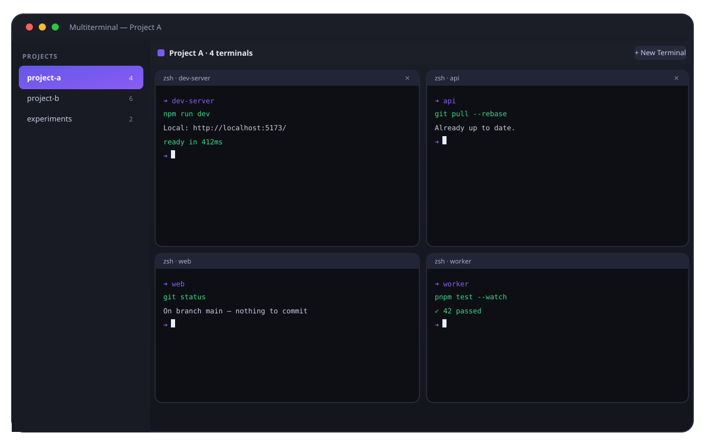
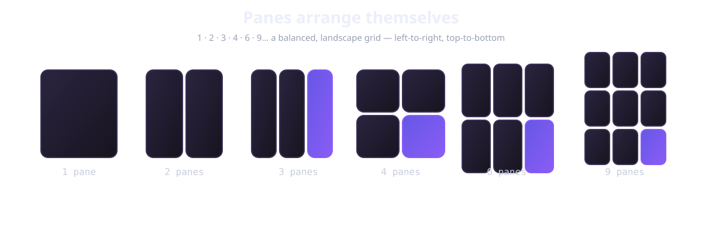

Multiterminal is a tiny, fast, native macOS app that arranges all of your terminals into a clean grid. Real shells, your full history, projects in the sidebar — and zero clutter.

One window for every shell you need.
Open one terminal, two, four, nine — they balance themselves into a tidy grid. No manual tiling, no tab shuffle.
Open a folder and it becomes a project. Every pane roots at that folder, and choosing a working directory names it for you.
Each pane is a real PTY running your login shell. Your history, aliases, and tools all just work. Restart and it reopens your projects.
Drag dividers to resize any pane. Drag panes around, or move a terminal to another project — right from its header.
Close and relaunch and Multiterminal restores your projects, folders, and pane layouts from your last session.
System, light, or dark chrome, plus a terminal font size that fits you — all in one settings sheet. ⌘,

The more you open, the more it contains — left to right, top to bottom. Drag any divider to give a pane more room.
Requires macOS 12+ and the Swift toolchain.
# Build & run (first run fetches SwiftTerm, then it's instant)
git clone https://github.com/arjunkshah12345-hash/multiterminal.git
cd multiterminal
swift run
# Or build a double-clickable .app with the icon
sh tools/build_app.sh release
open Multiterminal.appFree, native, open source — built for people who live in the command line.